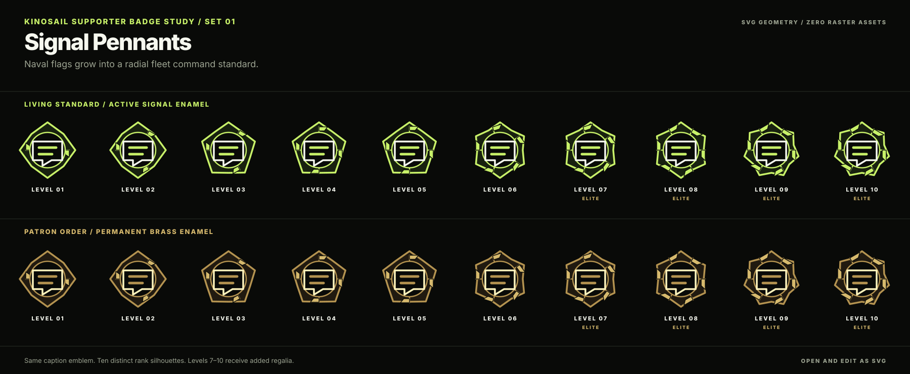
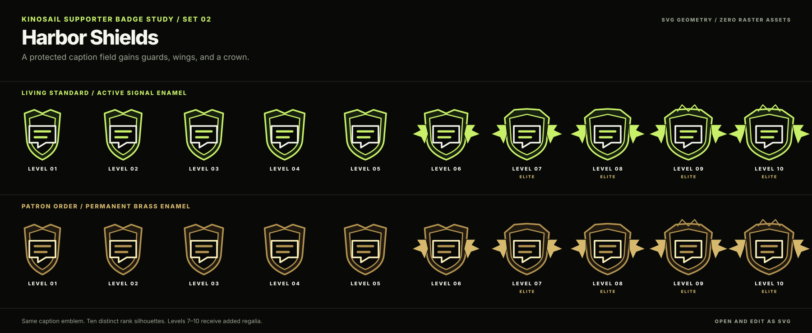
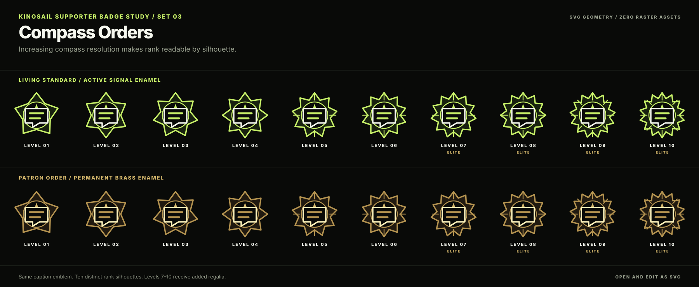
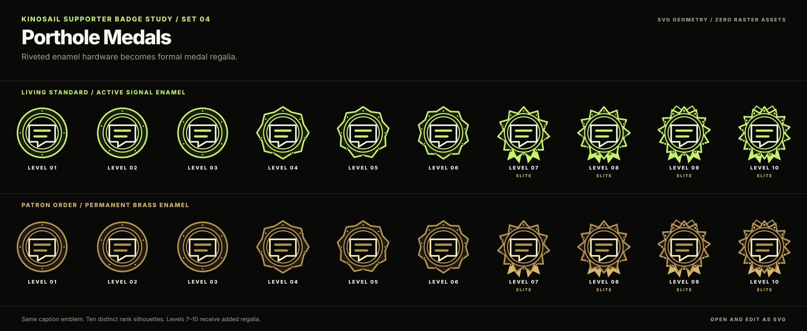
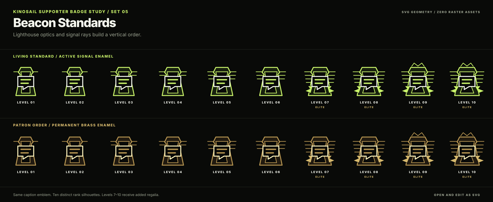
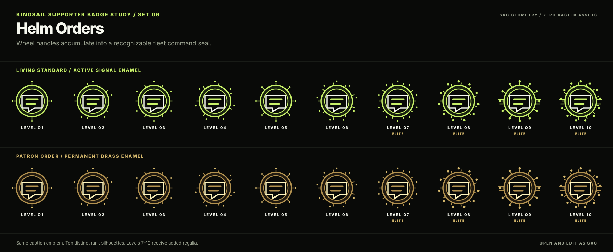
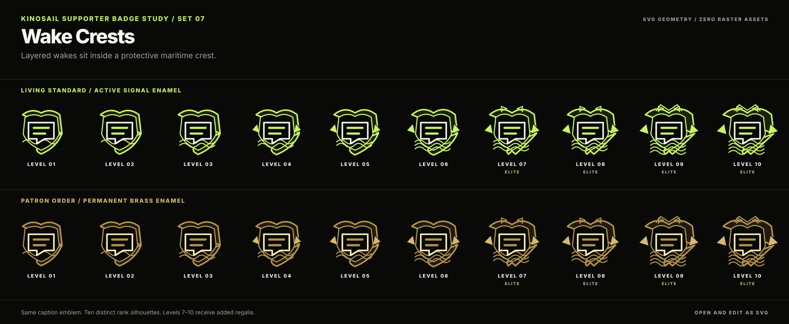
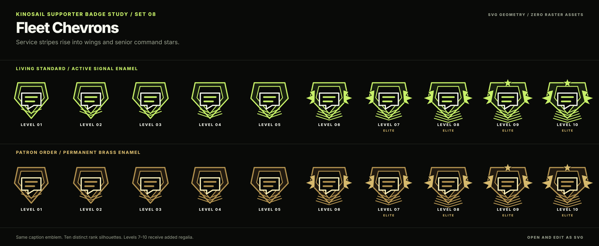
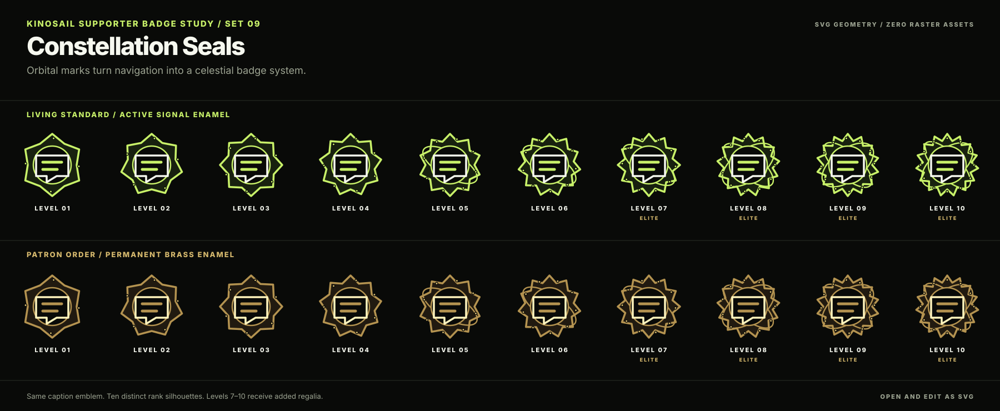
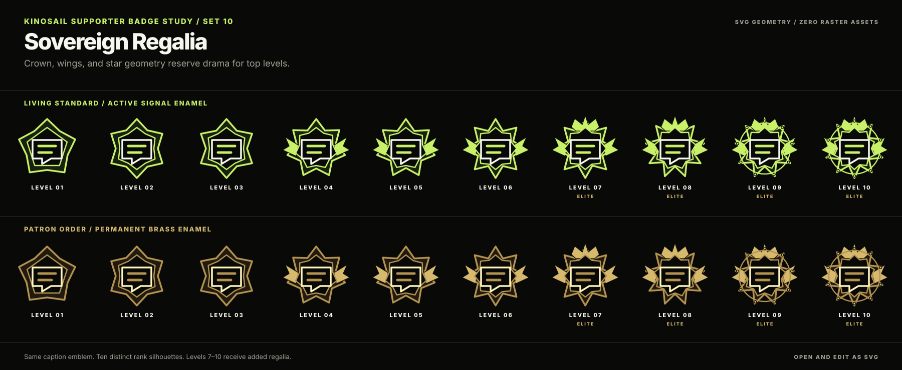

Signal Pennants
Most energetic. The flags make the family nautical without losing the caption mark.

Each direction contains ten rank silhouettes in both supporter families. The samples preserve the existing caption emblem and reserve added regalia for levels 7–10.
Most energetic. The flags make the family nautical without losing the caption mark.

Most formal. The protected field supports permanent and active honors equally well.

Best small-size rank clarity. Point count makes the progression visible without labels.

Most manufacturable. Rivets and ring depth suit enamel pins and print certificates.

Most service-specific. A lighthouse lens frames the caption signal instead of a generic star.

Most nautical. Added handles turn each level into a more capable command wheel.

Most cinematic. Layered wakes soften the military character without weakening status.

Best rank semantics. Service stripes, wings, and stars make advancement explicit.

Most expansive. Navigation becomes orbital geometry for the high supporter levels.

Most dramatic. Crown, wings, and star geometry concentrate spectacle at levels 7–10.
